01 / 05
— Galería
Doce momentos
fuera de orden.
↔ desliza ↔

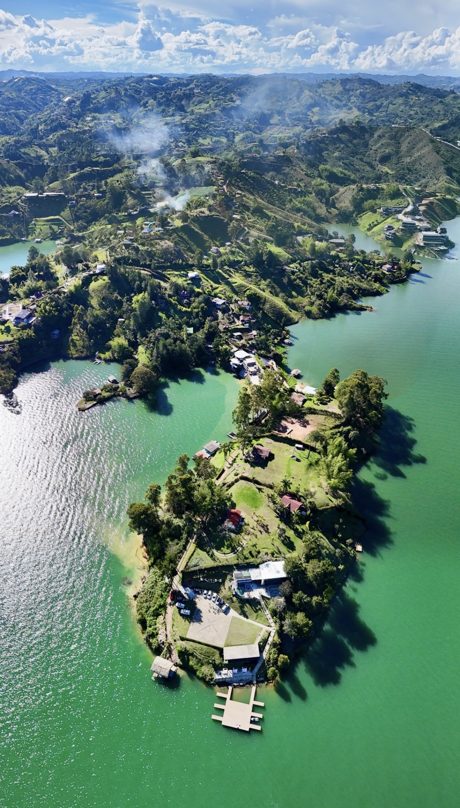
Una franja privada del embalse, frente a la Piedra del Peñol. Agua plana al amanecer.
El monolito de granito más antiguo de Antioquia: 220 metros, 80 millones de años, sagrado para los Tahamíes. La mayoría llega a Guatapé y la mira desde abajo. Bliss es de los pocos lugares donde se mira al revés — la Piedra observa la casa.
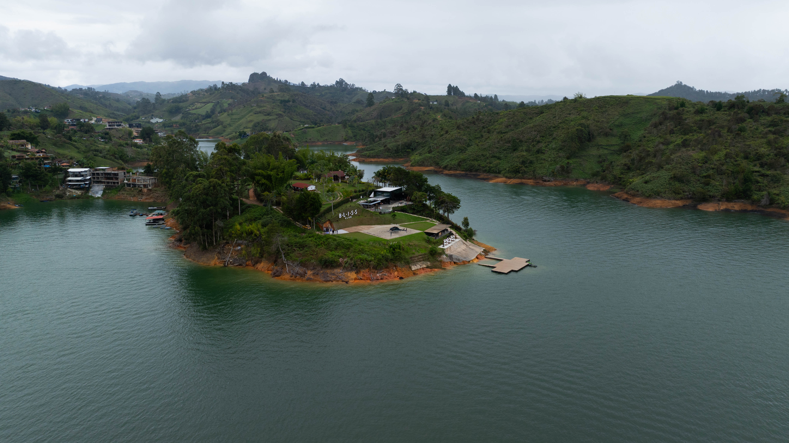
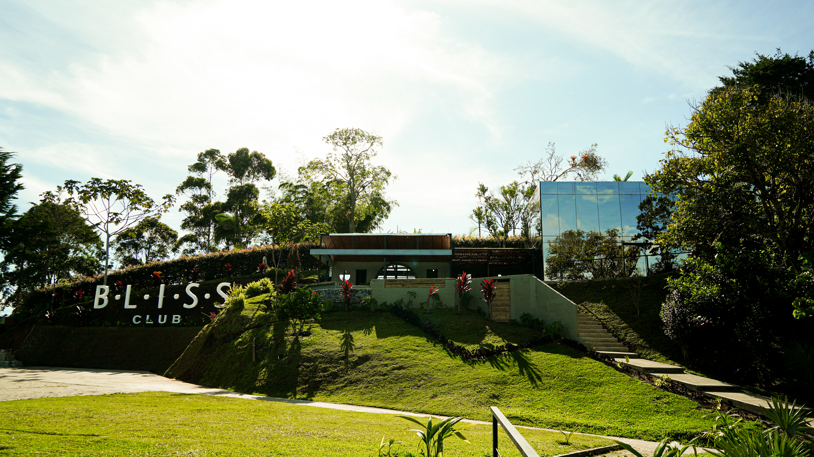
Pasa el cursor por los puntos.Toca cualquier punto para abrir su zona.
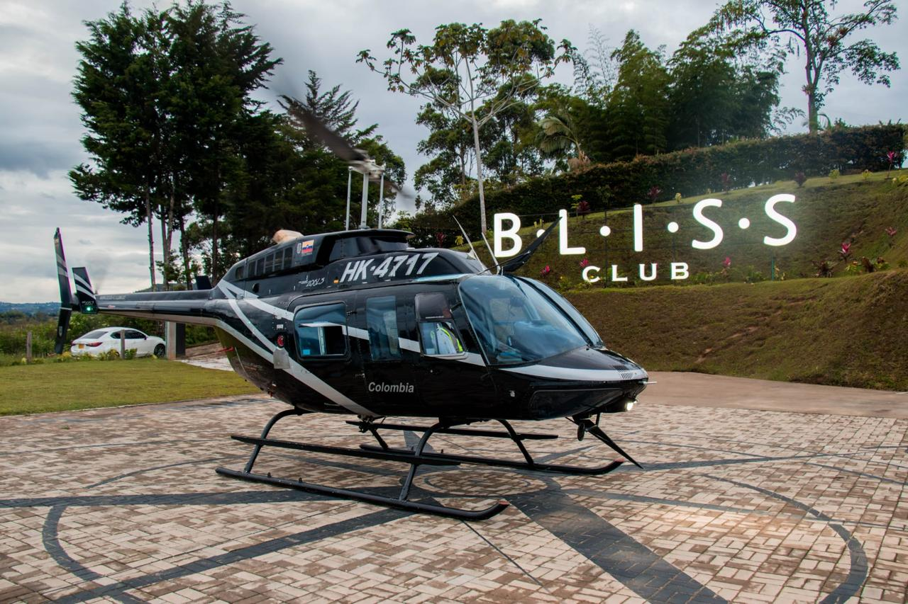
Tres entradas a la misma propiedad. Ninguna otra finca en Guatapé las reúne todas.
Quien llega cruza una sola portería — el resto del embalse se queda afuera. Desde Medellín: una hora y media en carro, veinte minutos sobre las montañas.
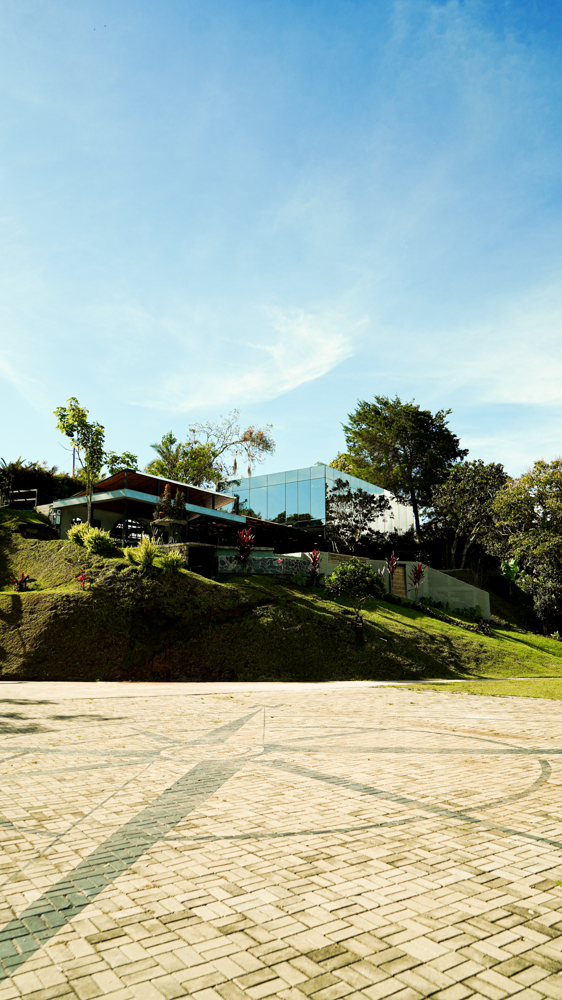
No es un hotel. Es una casa privada. La península entera puede tomarse para una sola ocasión.
Bar, cocina de autor, lounge con jardín vertical, marina y helipuerto propios. Buyout completo o reserva por grupo. Operación los doce meses del año.
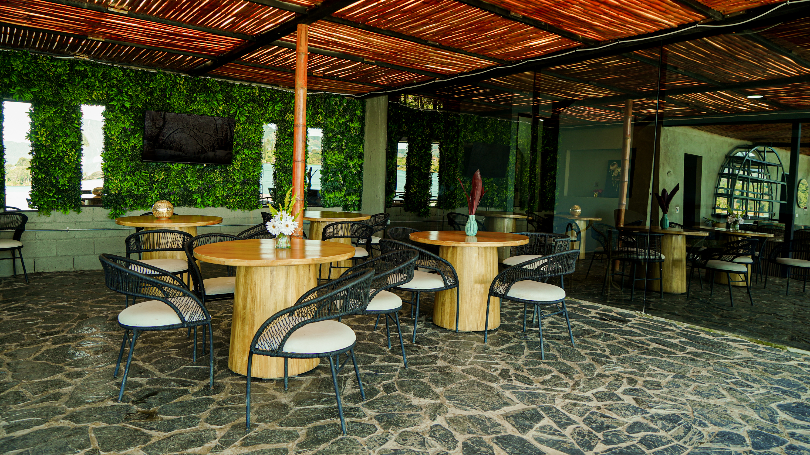
Bambú, piedra local, ratán negro, jardines verticales, madera maciza. Sonido pensado para conversar — sin pista que se imponga, sin esquina muerta. Materiales que envejecen con la casa, no contra ella.
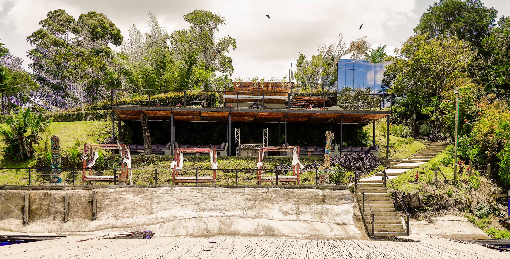
Escalinata propia al muelle. Ceremonia al aire libre dentro de una propiedad cerrada.
Bodas, fiestas privadas, lanzamientos. La marina y el anfiteatro se entregan curados — chef, sonido, iluminación. Llave en mano. Nadie cruza con público externo.
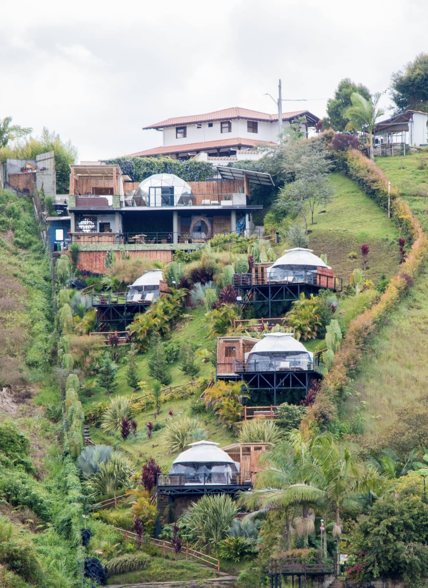
Cinco domos en cascada hacia el embalse — Cristal, Aire, Agua, Tierra, Fuego. Cada uno con terraza privada y vista frontal a la Piedra.
El Cristal es el signature — jacuzzi privado, reservado para los anfitriones. Los otros cuatro se reparten entre los invitados de la ocasión.
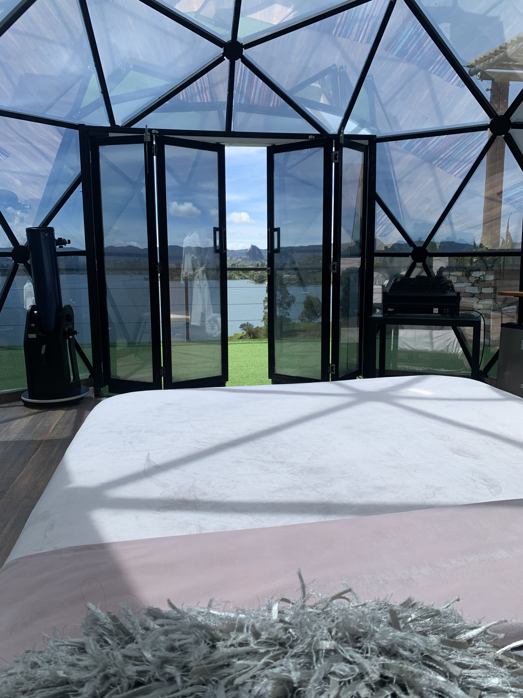
Cada domo encuadra el embalse y la Piedra desde la primera hora. Las ventanas no son una vista — son la habitación.
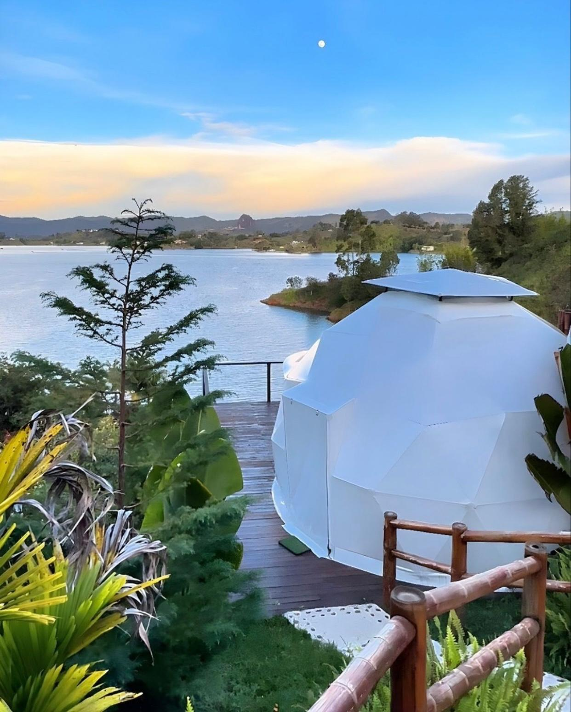
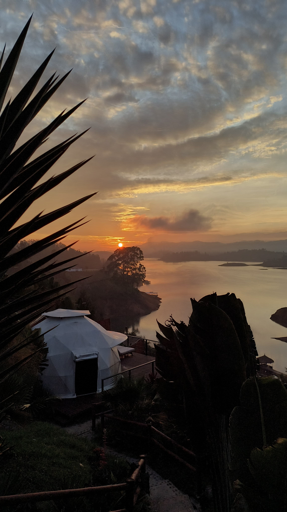
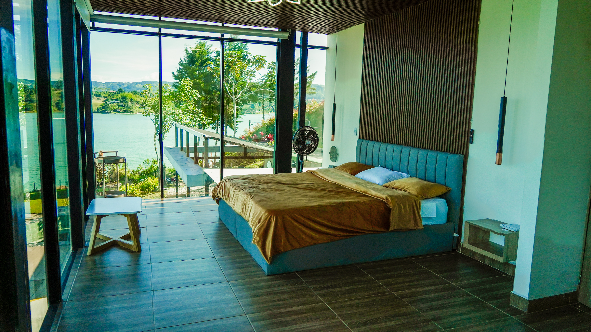
Ventanal piso a techo al embalse. El despertar pesa tanto como la noche anterior.
Lino, madera oscura, dorado tenue. Una habitación que no compite con la vista — la sostiene.
Lancha privada, jet ski, paddle, flyboard. La marina sale a los muelles principales del embalse. Bliss se vive desde el agua. La casa se mueve sin pisar tierra ajena.
La mesa no compite con el paisaje. Lo extiende.
Cocina antioqueña con técnica contemporánea — pescado del embalse curado, chorizo de cordero al sarmiento, plátano maduro lacado en miel de caña. Brunch sobre el muelle, almuerzo al sol, cena de tiempos después del atardecer. El chef compone la noche con la anfitriona, plato por plato.
Cítricos del oriente antioqueño, frutas del embalse, destilados colombianos. Un solo menú por noche. Una sola mesa.
Anfiteatro al agua, cocina del chef, operación llave en mano. La península se entrega completa.
Activaciones, lanzamientos, retiros C-level. Naming bajo curaduría. Sin contacto con público externo.
Escritura, planeación, bienestar, mastermind. Glamping completo, lejos del ruido.
Campañas, video musical, editorial. Más de treinta encuadres distintos dentro del mismo perímetro.
Domos, suites y habitaciones del club por noche cuando la casa no está reservada para una ocasión.
Extreme Happiness no es ruido.
Es lo que ocurre — fuego, mesa, agua, atardecer — cuando nadie afuera tiene que enterarse.
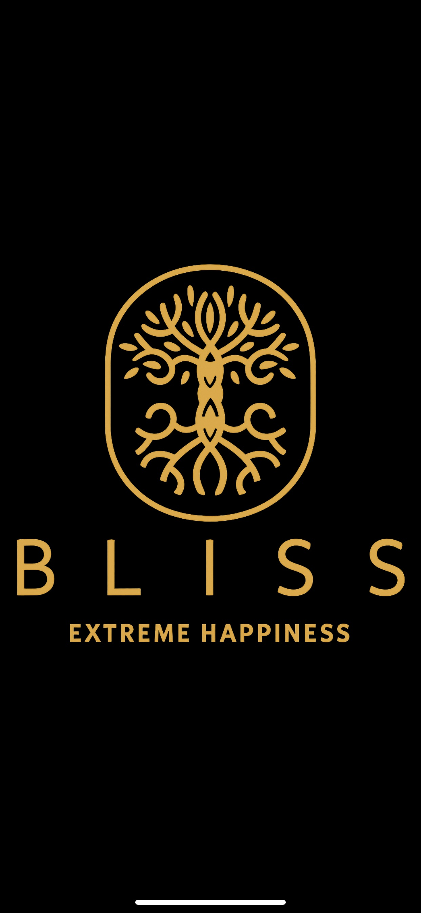
Happiness, Behind Closed Doors.